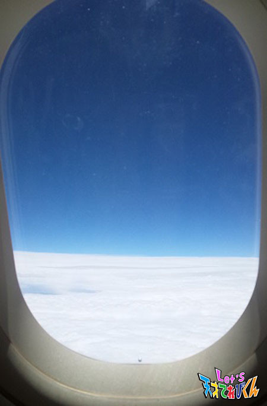
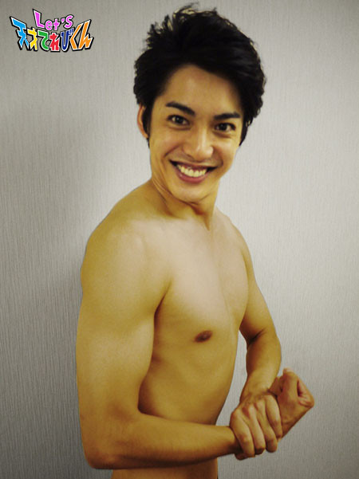

<<2014年8月 | トップページ | 2014年10月>>
2014年9月
これを食べているときが幸せ！［原田明莉］
★Hello★
だーはらですっ
さっそく、お題に突入！
今回のお題は、
【これを食べているときが幸せ！】です！
こないだ、空手の稽古帰りにお月見だんごを作りました！
残念ながら、月は出てなかったんですけど、
おだんごは、甘くて柔らかくて、すごいおいしかったです！
これを食べてるときも幸せなんだけど、
私は、
★チーズケーキ★
を食べているときが、いっちばん幸せですぅ
本当においしくて、おいしくてたまんない！
ファミレスにいくと、チーズケーキがよくあって！
主食よりも、そっちに目がいってしまう明莉なのです(*^o^*)
チーズケーキの種類もいろいろで！
★NYチーズケーキ
★スフレチーズケーキ
★ベイクドチーズケーキ
あとは、
★レアチーズケーキ
とか、もっともっといっぱい！
この中でも、フワフワ・トロトロないろんな食感がある
NYチーズケーキが大好きでーす！
ぜひ、食べてみてくださーい！（≧∇≦）ぅまぅま
★Let’s Eat★
投稿者:原田明莉 | 投稿時間:19時00分 | カテゴリ：てれび戦士 | 固定リンク
これを食べているときが幸せ！［瀧澤翼］
こんにちは！
最近、家のカーテンがブラインドに変わって、少し落ち着かない瀧澤翼です！
僕が好きな食べ物は、なんといってもホ・タ・テ！！
ですが、実はもう1つヤバイほど大好物があります。
それは、お母さん特製の『愛情たっぷりミートオムレツ』でーす(^O^)
スプーンを入れたら、もう止まりませ～ん！！
少し苦手なピーマンも入っていますが、
不思議とミートオムレツなら食べられちゃうんですよ！(^0^)！
きっと、ほかの野菜やお肉がピーマンをおいしくしてくれてるんですね)^o^(
本当にと～っても幸せな気持ちにしてくれる一品です！
だけど、たまにしか食べられないのが残念(。>д<)
ということで、僕の好きな食べ物ランキング！！
【1位】 やっぱり、ホ・タ・テ
【2位】 愛情たっぷりミートオムレツ！！
今日は、愛情たっぷりミートオムレツをお母さんに作ってもらい、食べました。
ミートオムレツ最高！！
投稿者:瀧澤翼 | 投稿時間:18時00分 | カテゴリ：てれび戦士 | 固定リンク
これを食べているときが幸せ！［飯島緋梨］
こんにちは。
飯島緋梨です。
あんなに暑かったのに、
ウソみたいに涼しくなって、
すっかり秋ですね。
秋はおいしい食べ物があるし、
サンマとか、さつま芋とか、栗とか大好き(^_^)
さつま芋と栗でスイートポテトを作ってみました*\(^o^)/*
食べるのも好きだけど、お菓子を作るのも楽しいです。
①さつま芋と栗をゆでて、皮をむいてからつぶします
②牛乳と砂糖とバターと塩を少々入れます
③ラップにくるんで、形を作り
④卵黄とみりんをぬり、黒ごまをのせて、トースターで10分くらい焼きます
簡単でおいしいスイートポテトの出来上がり！
ほどよい甘さで、超おいしかったです。
ぜひ、皆さんも試してみてね。
Let’s クッキング*\(^o^)/
投稿者:飯島緋梨 | 投稿時間:10時00分 | カテゴリ：てれび戦士 | 固定リンク
祝・異次元獣撃退！ITAISEN活動報告[大野拓朗課長]
茶の間戦士のみんな、ありがとう！
2014年9月25日、次元の壁を破って大阪に侵入したスプーンの異次元獣を、私たちは撃退することができた。
「大阪スプーン事件」をついに防いだのだ！
これで未来は変わった！
22世紀の地球は穴ぼこだらけになることも、
人類が地球を捨てて宇宙に移住することも、
宇宙船のチケットを奪い合って人々がみにくい争いを繰り広げることも、
すべてなくなったのだ！！！
関西の出張茶の間戦士と、全国の茶の間戦士のみんな、
てれび戦士諸君と虎南分析官、そして私、大野課長の活躍のおかげだ！
おめでとう！そしてありがとう！！君たちのことを誇りに思うぞ。
さて、私たちの活躍によって未来がどう変わったか、22世紀の麿長官に連絡を取ってみた。
すると！
なんと麿長官はのんきにプリンを食べているじゃないか！
しかも！坂田社長が開発した、あのダンベルスプーンを使ってだ。
 地球はまん丸で平和そのもの、移住計画など影も形もなさそうだ。
地球はまん丸で平和そのもの、移住計画など影も形もなさそうだ。
そもそも「大阪スプーン事件」が存在したこともまったく知らない様子だった！
せっかく異次元獣を倒したのだからもっとほめてくれてもいいのに張り合いがないが、
麿長官がいる未来では、スプーンの異次元獣が暴れまわったという事実は無いのだ！
みんな喜んでくれ！これぞ地球が救われた証拠だ。
坂田社長のスプーンが流行すること以外の未来は変わったのだ。

あ、あともう一つ変わっていたことがあった。
それは君たち自身の目で確かめてほしい。
今度映像を公開する予定だ。
それでは喜びをこめて、レッツ！！ また会おう。
投稿者:大野拓朗課長 | 投稿時間:18時54分 | カテゴリ：未来人 | 固定リンク
これを食べているときが幸せ！［小西憧弥］
こんにちはー！憧弥です(^-^)
この前、てれび戦士の辻村君がテレビに出てました！
見たかったんだけど、怖いテレビだったから、
見たらお風呂も入れなくなるし、寝れなくなるから、
どうしても見れなくて、録画して辻村君が出ているところだけをあとで見ました！
つーじー、すごいなぁ！
怖いテレビ見て、夜寝れなくならないのかなぁ…(ーー;)
今回のお題は、『これを食べているときが幸せ』です！
ぼくは、さつま芋が大好きだけど、ほかにも好きな食べ物がありまーす。
それは、【キツネうどん】V(^_^)V
どんなキツネうどんでもいいわけじゃなくて、
【お母さんが作ってくれるキツネうどん！】です。
だしの匂いが最高！お母さんの味！
風邪をひいたときとか、
おなかの調子が悪いときとか、
食欲がないとき、
キツネうどんが出てくると、ペロッと食べれちゃいます！
さつま芋を食べているときも、キツネうどんを食べているときも幸せ～(^ ^)
投稿者:小西憧弥 | 投稿時間:12時00分 | カテゴリ：てれび戦士 | 固定リンク
ここからの眺めが大好き！［桐畑カレン］
こんにちは。カレンです(*^^*)
この前、「親子ヨガ教室」に参加しました。
月のポーズとか、猫のポーズとか、名前がかわいい！
これは、「コブラのポーズ」。
ちょっと強そうな名前です。
Let'sのポーズのLにもみえますね(^∇^)
さてさて、私は高い場所から見る景色が好きです。
高い場所があったら、登ってみたくなります。
そんな高い場所が好きな私が教えたい、『ここからの眺めが大好き！』は…
「観覧車から見る花火」です！
観覧車が1番てっぺんにきたときに、花火を上から見ることができるんですよ！！
みんな、花火があがる少し前に観覧車に並び始めるから、
1周するのに何分かかるか、今何人くらい並んでいるか、
とかを考えながら、「よし、今だ～」と並び始めるんです。
そして、観覧車に乗って、中から花火を見ます。
目の前に花火があがって、音も「ドーン」と迫力満点です。
そして、なにより涼しいです(^^)
遊園地限定の景色だけど、これが大好きです(^∇^)
投稿者:桐畑カレン | 投稿時間:18時45分 | カテゴリ：てれび戦士 | 固定リンク
ここからの眺めが大好き！［辻村晃佑］
今回のテーマは、「ここからの眺めが大好き！」かー
いつもいろいろな景色を見るけど、やっぱり富士山を眺めるのが好きだな～～
この前、旅行に行ったとき、富士山の近くに泊まったので、すごくきれいに見えました。
ここらから眺めが最高だったので、好きになりました。

ちなみに家の中にも好きな眺めがあります。
それは・・・・・・・・
これだーーーーーヽ(`Д´)ﾉ
家の熊たちの眺めです。
やっぱり、熊はいいですよね。
この眺めが1番です！！

投稿者:辻村晃佑 | 投稿時間:18時45分 | カテゴリ：てれび戦士 | 固定リンク
ここからの眺めが大好き！［杉本瑛］
皆さん、いかがお過ごしですか？
今回のお題は、『ここからの眺めが大好き！』です。
私の好きな眺めは・・・フランス・パリの街の眺めです！
優雅（ゆうが）に寝る私（笑）でもまだまだ若いなぁ。
定番はエッフェル塔からの眺めですが、
私のオススメはここ,凱旋門（がいせんもん）の上からの眺めです！
1番上からの眺めは絶景ですが、階段の上り下りがとってもつらいです。
シャンゼリゼ通りが見えて、街がうず巻き状に広がっているのが、よくわかります☆
パリでもうひとつオススメなのが、
ノートルダム寺院の横を流れるセーヌ川のナイトクルーズ。
きれいなデザインの橋がたくさんあって、エッフェル塔がライトアップされて輝いていました。
でも、1番心に残っているのは、
舞台のお仕事で花道から退場するときに見た客席の眺めです。
たくさんのお客様が感動して泣いてくださいました。
手を振ってくれたり、拍手してくれたりしているのを見て、
私は、これからも演技のお仕事をがんばろうと思いました。
投稿者:杉本瑛 | 投稿時間:18時45分 | カテゴリ：てれび戦士 | 固定リンク
ここからの眺めが大好き！［瀧澤翼］
最近、けん玉にはまっている瀧澤翼です！
僕が住んでいる街は、自然が盛りだくさんです。
ゴルフ場のコースを囲むように街が出来上がっています。
夏はセミやカブトムシ、秋はトンボがいっぱい！
愛犬ポッキーの散歩で、毎日行く公園に小さい丘があります。
そこからは、森や家々を見下ろせて、しかも海が見えるんですよ～＼(^_^)／

僕は、この景色が大・大・大好きなんです！

空気はおいしいし、景色もいいし、ポッキーはかわいいしで、
僕のいやしの場所なんでーす！
元旦は、たき火をたきながら、みんなで初日の出を見る場所になっているそうです。
毎年、寝ないでがんばるんですが、ギリギリのところで(-_-)zzz
次回は、必ず見に行きたいと思いまーす！
投稿者:瀧澤翼 | 投稿時間:18時45分 | カテゴリ：てれび戦士 | 固定リンク
ここからの眺めが大好き！［原田明莉］
★Hello★
原田明莉です。
今度から、
「だーはらです！」
にしてみよっかなーーー？
「だーはら」って、あだ名つけてくれたのが、てれび戦士の仲間たち！
ほんとナイスだよー！
すっごい、いい感じのあだ名じゃないですか？
これから、みんなにも
「だーはら」
って、呼んでもらいたいなっ♪
じゃっ、呼び名の話は、ここまでにして、今回のお題にはいりますっ
今回のお題はー、
★ここからの眺めが大好き！★
ッです！
明莉は、この間、家族旅行で新潟に行ってきましたー
景色は、さいこぉぉぉでしたよー
すごいきれーじゃないですかっ？☆
ここから見る眺めもすごい好きなんですけど、
だーはらは、
表彰台の1番高いところから見る眺めがいっちばーん好きです♪♪
トップにたてた！
という、うれしい気持ちがわきあがってきますっ♪♪
これからも、自分の大好きな景色を眺められるように、空手の練習をがんばります！
努力は、絶対裏切りませんよ！
★Let's Training ★（練習）
投稿者:原田明莉 | 投稿時間:18時54分 | カテゴリ：てれび戦士 | 固定リンク
ここからの眺めが大好き！［小澤竜心］
こんにちは！竜心です。
ぼくが『大好きな眺め』は、
【 下から見たスカイツリー 】
下から見たら、でーっかくて、空につきささってるみたいなんだよ。
竜が天にのぼってるみたいで、びっくりしました。
スカイツリーって遠くからでもよく見るけれど、やっぱり近くで見た迫力がすごいです！
もうひとつは、
【 お父さんとぼくの後頭部 】
…そっくり親子なんです。
ふたりでならんでると、お母さんが坊主頭の後ろの写真をとってくれます。
その写真をみると、いつも幸せな気持ちになるんです。
近所の人や友達からも、いやされるねーって言われます。
自分たちでは、見ることができないけれど、『大好きな眺め』なんですよ～＼(^o^)／
投稿者:小澤竜心 | 投稿時間:18時45分 | カテゴリ：てれび戦士 | 固定リンク
ここからの眺めが大好き！［飯島緋梨］
こんにちは。
飯島緋梨です。
あっという間に、夏休みが終わってしまいました。
まだまだ遊びたいことが、いっぱいあったのに・・・
夏休みがたりない！
皆さんもそうかな？
緋梨は、お祭りの帰りに花火をしたよ。
今回のテーマは、
『ここからの眺めが大好き！』(^_^)
緋梨の好きな眺めは、空！
いつもの帰り道、
空を見上げるときれいな雲がいっぱい(^_^)
雲が流れている様子を見ると、
ずーと見ていたくなります。
同じ雲なのにまったく違う景色になるので、うれしくていつも写真をいっぱい撮っています。
その中でも、緋梨お気に入りの雲の写真を3枚！
ふしぎな色にすいこまれそう(^_^)
投稿者:飯島緋梨 | 投稿時間:18時45分 | カテゴリ：てれび戦士 | 固定リンク
ここからの眺めが大好き！［小西憧弥］
こんにちはー(^o^)/ 憧弥です。
この前、道を歩いてたら、アスファルトにセミさんの幼虫を発見しました！
ぬけがらは見たことあったけど、動いてるのは初めて見ました。
このままだと踏まれてしまうから、手にのせて近くの木につかまらせてあげました。
ゆっくり上の方に登っていくのが、かわいかった！
ちゃんとセミさんになれたか気になったので、
次の日に見に行ったら、のせてあげた木のちょっと上の枝の葉っぱに、
ちゃんとぬけがらがあったのーー(^_^)v
すっごくうれしかったんだ！
今回のお題は、「ここからの眺めが大好き！」です！
僕のお父さんは、大きなバイクに乗って走るのが大好きです。
家でよくバイクのメンテナンスをしてるので、手伝ったりします。
メンテナンスが終わると、憧弥を乗せて走ってくれます。
そのバイクの後ろに乗って見る景色が大好きです。
冬は寒くて泣きそうになるけど、夏は走ってるとすずしくて最高(^_^)v
海の近くは、サーフィンをしている人を見れたりして面白いし、
近所の道も高い所からみると、いつもとちがって見えて楽しいー！
16歳になったら免許をとって、お父さんとツーリングに行く約束してるから、
早く16歳になりたいなー(^_^)v
投稿者:小西憧弥 | 投稿時間:18時54分 | カテゴリ：てれび戦士 | 固定リンク
ここからの眺めが大好き！［赤崎月香］
こんにちは ヽ(^▽^@)ノ
赤崎月香です。
はりきっています！！(￣‥￣)=3
だって9月は、わたしの誕生日月♪
ワクワクします((o(^-^)o))
さっそく、欲しいものリストを作って、
お父さんとお母さんに提出～
・・・・・・・・・ あれ？ ・・・・・・・・・
ひとつずつ却下 Σ(T□T)ェェェ－
欲張りすぎました・・・
妹に
「誕生日は、感謝する日！」
と言われ、
ほぅほぅ、なるほど ∈(￣ｏ￣)∋
「お父さん、お母さん、ありがとう！！！」
と言ってみたよ♪
そしたら、お母さんに
「逆に何かちょうだい！」
と言われました…
感謝ってむずかしい ( ;￣ω￣)ゞ
でもわたしが、ここにいるのは、
両親やご先祖様のおかげです。
みなさんもお誕生日は両親に、
「ありがとう」
を贈りましょう♪
ちょっと恥ずかしいけど、なんか嬉しい(*´ェ`*)
☆。・:*:・°★,。・:*:・°☆
わたしの大好きな眺めを紹介します。
やっぱり飛行機からの眺めが大好き！！！

雨の日でも、雲の上は晴れ♪
最高です！
ずっと続く空と雲の色がきれいです。
雲の間から見える、キラキラ光る海もきれいです。
もうひとつ。
自分のベットに座って、眺める部屋が好きです。
楽しい日も、疲れた日も、
散らかった机も、壁にはったシールも、
なんか全部好きなんです！
落ち着きます。
お部屋の写真はありません。
はずかしいから (Ψ▽Ψ*) ごめんなさい
ホントは、もうひとつあるのですが、
これはナイショ！！！
わたしのとっておきだから・・・(*ノノ)
☆。・:*:・°★,。・:*:・°☆
2学期も頑張るぞ！！！
またね～ヾ(*'-'*)
投稿者:赤崎月香 | 投稿時間:18時45分 | カテゴリ：てれび戦士 | 固定リンク
21世紀調査報告書その7［大野拓朗課長］
「みんな、待たせたな！！！」
22世紀から……
21世紀に……
帰って……
キターーーーー！！！！！
うぅ。。。
みんな、心配をかけてすまなかった。。。
私がいないことで、さみしくて眠れない夜を過ごしていたことと思う。
暑くて暑くてしかたがなくて、外に出て遊ぶのが嫌になるような夏を過ごしていたと思う。
雨が多くて、ゆううつな夏を過ごしていたと思う。
しかし！プールや海に行って、冷たくて気持ちの良い夏を過ごしていたと思う！！
私はというと
22世紀にいても、てれび戦士や茶の間戦士諸君のことを忘れたときなど、一瞬たりともない。
来る日も来る日も、ずっとみんなのことを考えていた。
もちろん、あのにっくきスプーンの異次元獣のことも。
そこで私は、異次元獣を倒すため、身体を鍛えていた！！！
ものすごく重いものを持っての筋トレ。
そして、走り込み。
決死の思いで自分と戦ってきた。
どうだ、このボディビルポーズ！！

異次元獣を倒すため、バージョンアップして21世紀に帰ってきたぞ！！！
この私のマッスルパワーで、異次元獣などちょちょいのちょいだ！！！
わはははははーーーー！！！
…………。
で、でもちょっと待ってくれ。
一応だな、どちゃもんは、もっとたくさん仲間にする。
生身の人間には異次元獣を直接攻撃することはできない。
それができるのはどちゃもんたちだけなのだ。
私はけ、けけ、決して異次元獣が恐いわけではないぞ！！！
………ゴホン。
まあ、とにかく！！
茶の間戦士諸君も、今まで通り力を貸してくれ。
異次元獣との決戦に備えて、どちゃもんを仲間にするお手伝いをしてくれ。
そして異次元獣との決戦のときは、みんなの力を大阪に集めるんだ！！！
よろしく頼んだぞ。
さて。
21世紀にも帰ってきたことだし、
前から、ずっと気になっていた「カラオケ」というシステムを体験してみた。
もちろん、目立たないよう21世紀の衣装を着て行動した。
いやー、マイクを通して大きな声で歌うってのは、気持ちのいいもんだな！！
私の調査によるところの、21世紀でいちばん流行っている曲をおぼえたぞ。
君たちにも聞かせてあげたいなー。
いつか機会があったら、ぜひとも聞かせてあげよう！！
楽しみにしていてくれ。
それでは、新たなどちゃもんの調査と、
カラオケの練習をしなければならないから、今日はここまで。
さっきも言ったが、茶の間戦士諸君、これからもよろしくな。
ともに戦おう！！
Let's！！
またねー！！
投稿者:大野拓朗課長 | 投稿時間:18時45分 | カテゴリ：未来人 | 固定リンク
ここからの眺めが大好き！［笹原尚季］
こんにちは。笹原尚季です♪
最近、兄がエビを飼い始めました。
ビーシュリンプといって、ものすごく小さいので、
水そうに少しぶつかるだけでも、ビックリしてとびはねてしまうので、
静か～にするよう、気をつけています(>_<)
ちっちゃくて、かわいいです☆
さて、今回のお題は、
「ここからの眺めが大好き！」です。
僕の好きな眺めは、たくさんあります。
例えば、にぎやかな商店街や花がきれいなお家...
その中でも1番好きなのは、お父さんと登った山の上から見た景色です。
そこには、ふだんは見られない絶景と澄みきった空気があるので、
すごくきれいに見えます。
登っているときは、疲れるし大変だけど、
頂上に着いて絶景を見るのは、本当にきれいでうれしいです！
投稿者:笹原尚季 | 投稿時間:18時45分 | カテゴリ：てれび戦士 | 固定リンク
ここからの眺めが大好き！［齋藤茉日］
こんばんは～
茉日です～
いきなり、本題に入っていきたいと思います！
みなさんは、好きなものやおいしそうなもの、好きな場所から見る景色、
そんなものを見ていると、心が踊りますよね～
今回のテーマは、『ここからの眺めが大好き！』
みなさんは、どこから見る景色、何を見るのが好きですか？
私は、いくつかあります～
おいしそうなケーキを前にしたとき～
おいしそ～！！
おばあちゃんのお家から見る畑～
おじいちゃんは、ここの畑で季節の野菜を作って、
遊びにいくと、その野菜を食べさせてくれるんです～
お家に届けてくれたりもしてくれます～
ちなみに、おばあちゃんのお家は、東京都です！笑
のどかでしょ？
。。。。。
そんな感じです！
景色って変わり続けていくから、見てると心が安らぎますね。
それでは、Let's！！
投稿者:齋藤茉日 | 投稿時間:18時45分 | カテゴリ：てれび戦士 | 固定リンク
ここからの眺めが大好き！［林武尊］
こんにちは！ 林武尊です。
この前、友達とお台場にご飯を食べに行きました。
テラス席でご飯を食べていたら…
なんと！突然、花火が上がって、チョーラッキー！
すごーく楽しかったです（≧∇≦）
ほかにも、いろいろな夏休みの出来事を写真にまとめました。
さて、本題へ。
ぼくの1番好きな眺めは、
ひいおじいちゃんとひいおばあちゃんのお墓から見える景色です。
毎年、必ずお盆にお墓参りに行くのですが、
ここは、自然に満ちあふれていて大好きです！
まるで、トトロが住んでそうな所です 。
1年に1回しか来れないけど、来年も再来年も必ず来たいと思います！
投稿者:林武尊 | 投稿時間:18時45分 | カテゴリ：てれび戦士 | 固定リンク
夏ならではのお楽しみといえば・・・［原田明莉］
★Hello★
原田明莉です！
7月後半に空手の試合がありましたー！
暑くて暑くて試合大変でした！
この試合は、全国大会の予選なので、
ほんっとに緊張しましたー
で、試合の結果…
組み手は、優勝することができましたーーー！
はー、緊張がやっととけたー！
じゃっ！空手の話はこのくらいにして、
今回のお題に入ります！
今回のお題は、
『夏ならではのお楽しみ』です！
わたしの夏ならではのお楽しみは、夜の寝方です！
夏って夜も暑いから、やっぱりすずしく寝たいじゃないですか！
逆に
冬は寒いから暖かくして寝たい！
でも、そうすると冬のパジャマって寝るときに、
なーーーーーーーーんか、寝づらい！
そこで夏、わたしの夜は・・・
★ノースリーブワンピ★
おまけに
★氷マクラ★
で、寝るんです！
寝心地もよく、涼しー！
ワンピは、
ゆったりしてて、寝心地がさいこーなんですよーーー！
涼しげなワンピは、夏しか着れない！
そして、
氷マクラは、
暑い夏には、ピッタリ！
寝るときもほんと涼しくて、枕元はひんやりぃーーー♪
あっ、そうだ！
氷マクラの水滴でベッドがぬれないように、タオルで巻いてね！
ということで、
わたしの夏ならではのお楽しみは、
★夜の寝方★
でしたーーー！
★Let's cool ★
投稿者:原田明莉 | 投稿時間:18時54分 | カテゴリ：てれび戦士 | 固定リンク
夏ならではのお楽しみといえば・・・［小澤竜心］
こんにちは！竜心です。
この前、ダンスの発表会がありました。
ぼくは、10曲踊りました。
友達がたくさん来てくれたので、はりきって踊っちゃいました～♪
みなさん、ありがとう＼(^o^)／
発表会が終わって、
秋田のおじいちゃんとおばあちゃんの家に遊びに行きました。
ぼくの『夏ならではのお楽しみ…』は、
【 おじいちゃんの畑 】
到着したら、まず、おじいちゃんの畑を見て、野菜のできを確かめます。
その野菜を収穫して、食べるのが楽しみなんです。
公園に行けば、トンボやセミがいるので虫とりをしたり、
田んぼの川に行けば、ドジョウやザリガニをつかまえます。
でも今回は、雨でできなかったんだぁ～、残念…(T-T)
というわけで、おじいちゃんの野菜を紹介します。
☆ミニトマト☆
☆オクラ☆
☆Let's！キュウリ☆
たまに田舎に行って、なーんにも考えないで遊ぶのって、気持ちいいなぁ～♪
冬休みも行けたらいいな～o(^o^)o
投稿者:小澤竜心 | 投稿時間:18時45分 | カテゴリ：てれび戦士 | 固定リンク
夏ならではのお楽しみといえば・・・［桐畑カレン］
こんにちは。カレンです(*^^*)
毎日暑いですね。
みなさんは、夏バテしていませんか？
わたしは、宿題もほとんど終わったから、毎日気楽に遊んでます(^.^)
この前は、これで遊びました。
これは、積み木です(^∇^)
この積み木は、くずれるときに「カラカラカラ」と、とってもいい音がします。
この音を聞くために、わたしはいつも高～く高～く積み上げます(^-^)v
そして、一気に「とおっ！」て
こわします。
カラカラカラカラカラ～
うん、いい音です！！
夏ならではのお楽しみといえば…
それは「サファイア探しをすること」です！
毎年、夏休みになると、奈良県の博物館にサファイア探しに行きます。
たくさんの砂の中からスプーン１杯分すくって、
その砂の中をむしめがねでのぞいて、
青いキラリとする石を探します。
それがサファイアです。
砂の中には、ガーネットとか、ジルコンとかの石もまざっているけど、
わたしは、ひたすらサファイアを探します(._.)
なぜかというと、サファイアはわたしの誕生石だからです。
プチ情報だけど、サファイアは「誠実」という意味があります(^∇^)
そして家に持って帰って、今まで集めたサファイアと合わせます。
集まったサファイアを見て、ニヤニヤします。
小さなかけらのサファイアだけどだいぶ集まりました。
いつか大きな宝石になれば、いいのになあ(*^^*)と思ってます。
ちりもつもれば山となる！
最近、覚えたことわざです＼(^-^)／
投稿者:桐畑カレン | 投稿時間:18時45分 | カテゴリ：てれび戦士 | 固定リンク
夏ならではのお楽しみといえば・・・［笹原尚季］
残暑見舞い申し上げます。
皆さん、夏バテしてないですか？
毎日暑いですが、超元気に過ごしている笹原です♪
この前、うちのカメさんがいつの間にか家の中を散歩していて、ビックリしました！∑(ﾟДﾟ)
尚は、すごくあわてたけど、カメさんはつかまりたくなかったみたいで、
すごい速さで逃げようとしました。
カメさんも暑いから、涼しい所に移動したかったのかも♪
今回は、『夏ならではのお楽しみといえば... 』です。
僕の楽しみは、
お出かけしたり、
スイカを食べたり、
花火をしたり、
学校のプールに行ったりする ことです。
その中でも1番の楽しみは、
今年で91歳になったひいおばあちゃんやおじいちゃんの家に
遊びに行くことです☆
群馬のおいしい水を飲んだり、ごはんを食べたり、
広い田んぼやきれいな山を見ることも楽しみのひとつです。
電車に乗って外を眺めながら、今年ものんびり行ってきま～す！
Let's 夏休み☆

投稿者:笹原尚季 | 投稿時間:18時45分 | カテゴリ：てれび戦士 | 固定リンク
ページの一番上へ▲